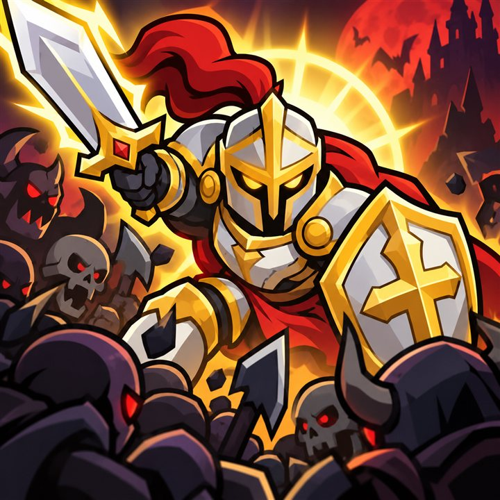

Survival combat
Fight back against enemy hordes that grow with every wave.
OFFLINE ROGUELITE ACTION RPG
Step into compact arenas, hold your ground against growing enemy waves, and shape a stronger paladin with every upgrade you choose.

EVERY RUN IS A NEW TRIAL
Each run starts with one goal: survive the next wave. Learn enemy patterns, pick the right upgrades, and return for another trial with a better strategy.
FEATURES
Fight back against enemy hordes that grow with every wave.
Dangerous bosses test your movement, timing, and build choices.
Choose weapons and power-ups during the run to shape your play style.
Unlock heroes, maps, and lasting upgrades for health, armor, speed, and more.
Come back each day to collect rewards that help power up your paladin.
The core game runs without an internet connection, anytime you want.
HOW TO PLAY
Move through the arena, dodge incoming attacks, and defeat waves of enemies to gain experience.
Pick weapons and upgrades that balance attack power, armor, movement speed, and survival bonuses.
Spend earned gold on permanent upgrades, unlock heroes and maps, and take on the next trial.
ADS & PURCHASES
If an ad is not available, the game simply continues — the related option stays inactive and you keep playing.
QUESTIONS & ANSWERS
Yes. You can play the core game offline. Ads and purchases need a connection.
A roguelite survival action RPG with enemy waves, boss battles, and run-based upgrades.
Yes. Combine offense, defense, and mobility upgrades during each run to suit your strategy.
Yes. Each trial delivers an action-focused challenge without a long setup.
Your progress is stored on your device. Uninstalling the app or clearing its data removes it. There is no account or cloud save.
Make sure you are signed in to the same Google Play account and reopen the game — purchases are checked at launch. If it still doesn't work, email cukkacreatives@gmail.com.